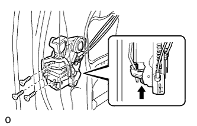
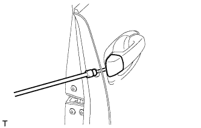
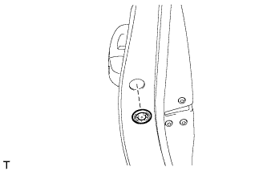
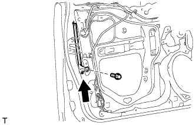
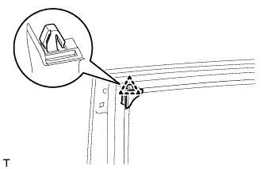
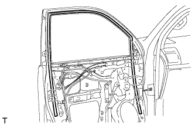
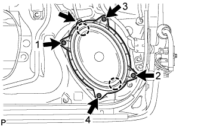
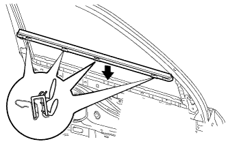

FRONT DOOR > REASSEMBLY |
| 1. INSTALL FRONT DOOR PANEL CUSHION |
Attach the clip to install a new door panel cushion.
| 2. INSTALL LOWER FRONT DOOR OUTSIDE STRIPE LH |
| Item | Temperature |
| Vehicle Body | 40 to 60°C (104 to 140°F) |
| Outside Stripe | 20 to 30°C (68 to 86°F) |
Refer to the illustration to position a new lower front door outside stripe.
| Area | Specified Condition |
| A | +/-1.0 mm (0.039 in.) from end |
| 3. INSTALL FRONT DOOR OUTSIDE STRIPE LH |
 |
| Item | Temperature |
| Vehicle Body | 40 to 60°C (104 to 140°F) |
| Outside Stripe | 20 to 30°C (68 to 86°F) |
Refer to the illustration to position a new front door outside stripe.
| Area | Specified Condition |
| A | +/-1.0 mm (0.039 in.) from end |
| 4. INSTALL NO. 1 BLACK OUT TAPE LH |
 |
| Item | Temperature |
| Vehicle Body | 40 to 60°C (104 to 140°F) |
| Black Out Tape | 20 to 30°C (68 to 86°F) |
Refer to the illustration to position new black out tape.
| Area | Specified Condition |
| A | 2.0 to 4.0 mm (0.078 to 0.158 in.) |
| B | 4.0 to 6.0 mm (0.157 to 0.236 in.) |
| 5. INSTALL FRONT DOOR REAR WINDOW FRAME MOULDING LH |
| Item | Temperature |
| Vehicle Body | 40 to 60°C (104 to 140°F) |
| Window Frame Moulding | 20 to 30°C (68 to 86°F) |
Clean the vehicle body surface.
Using a heat light, heat the vehicle body surface.
Remove the double-sided tape from the vehicle body surface.
Wipe off any tape adhesive residue with cleaner.
Install a new front door rear window frame moulding.
Using a heat light, heat a new front door rear window frame moulding and the vehicle body surface.
Remove the peeling paper from the face of the front door rear window frame moulding.
Attach the clip and double-sided tape to install the front door rear window frame moulding.
Install a new door window frame moulding clip.
| 6. INSTALL FRONT DOOR BELT MOULDING LH |
Attach the 6 claws to install the front door belt moulding.
| 7. INSTALL FRONT DOOR WEATHERSTRIP LH |
Using a heat light, heat the front door weatherstrip.
| Item | Temperature |
| Vehicle Body | 40 to 60°C (104 to 140°F) |
| Front Door Weatherstrip | 20 to 30°C (68 to 86°F) |
Remove the double-sided tape from the vehicle body.
Wipe off any tape adhesive residue with cleaner.
 |
Attach the 21 clips and double-sided tape to install a new front door weatherstrip.
| *1 | Double-sided Tape |
| 8. INSTALL FRONT DOOR CHECK ASSEMBLY LH |
Apply MP grease to the sliding areas of the front door check assembly.
 |
Install the door check to the door panel with the 2 nuts.
Apply adhesive to the threads of the bolt.
Install the front door check assembly with the bolt.
| 9. INSTALL FRONT DOOR NO. 2 STIFFENER CUSHION |
Clean the installation surface.
Using a heat light, heat the installation surface.
| Item | Temperature |
| Vehicle body | 40 to 60°C (104 to 140°F) |
Remove the double-sided tape from the installation surface.
Wipe off any tape adhesive residue with cleaner.
Install a new door stiffener cushion.
Using a heat light, heat a new front door No. 2 stiffener cushion and the installation surface.
| Item | Temperature |
| Door stiffener cushion | 20 to 30°C (68 to 86°F) |
| Vehicle body | 40 to 60°C (104 to 140°F) |
Remove the peeling paper from the face of the door stiffener cushion.
Attach the 2 clamps and double-sided tape to install the front door No. 2 stiffener cushion.
Install the 2 bolts.
| 10. INSTALL FRONT DOOR LOCK OPEN ROD LH |
Install the front door lock open rod as indicated by the arrows in the order shown in the illustration.
| 11. INSTALL FRONT DOOR NO. 2 WIRE LH |
 |
Attach the 4 clamps to install the front door No. 2 wire.
| 12. INSTALL FRONT DOOR OUTSIDE HANDLE FRAME SUB-ASSEMBLY LH |
Apply MP grease to the sliding parts of the front door outside handle frame sub-assembly.
Attach the door handle nut and claw.
Using a T30 "TORX" socket wrench, install the front door outside handle frame sub-assembly with the screw.
 |
Attach the clamp.
Connect the front door No. 2 wire connector to the front door wire.
| 13. INSTALL FRONT DOOR REAR OUTSIDE HANDLE PAD LH |
Attach the 2 claws to install the front door rear outside handle pad.
| 14. INSTALL FRONT DOOR FRONT OUTSIDE HANDLE PAD LH |
Attach the 3 claws to install the front door front outside handle pad.
| 15. INSTALL FRONT DOOR OUTSIDE HANDLE ASSEMBLY LH |
Insert the front end of the front door outside handle assembly into the front door outside handle frame.
Insert the rear end of the front door outside handle assembly into the front door outside handle frame, and then slide the front door outside handle assembly toward the front of the vehicle to install it.
Move the lever in the direction indicated by the arrow in the illustration to lock the door outside handle assembly.
 |
Connect the connector.
Attach the 2 claws.
| 16. INSTALL FRONT DOOR INSIDE LOCKING CABLE ASSEMBLY LH |
Install the front door inside locking cable assembly.
Attach the 3 claws.
| 17. INSTALL FRONT DOOR LOCK REMOTE CONTROL CABLE ASSEMBLY LH |
Install the front door lock remote control cable assembly.
| 18. INSTALL FRONT DOOR LOCK ASSEMBLY LH |
Apply MP grease to the sliding parts of the front door lock assembly.
Install a new door lock wiring harness seal to the front door lock assembly.
|  |
Insert the front door lock open rod to the front door lock assembly.
 | Slide |
Check that the front door lock open rod is securely connected to the front door lock assembly.
Using a T30 "TORX" wrench, install the front door lock assembly with the 3 screws.
Connect the connector.
| 19. INSTALL FRONT DOOR OUTSIDE HANDLE COVER RH (for Front Passenger Side) |
|  |
Using a T30 "TORX" socket wrench, install the front door outside handle cover with the screw.
 |
Install the hole plug.
| 20. INSTALL FRONT DOOR OUTSIDE HANDLE COVER LH (for Driver Side) |
 |
Attach the claw to install the front door outside handle cover to the front door lock cylinder.
| 21. INSTALL FRONT DOOR OUTSIDE HANDLE COVER WITH LOCK CYLINDER ASSEMBLY (for Driver Side) |
Install the front door outside handle cover with lock cylinder assembly.
 |
Using a T30 "TORX" socket wrench, install the front door lock cylinder with the screw.
|  |
Install the hole plug.
| 22. INSTALL FRONT DOOR REAR LOWER FRAME SUB-ASSEMBLY LH |
|  |
Install the front door rear lower frame sub-assembly with the bolt as shown in the illustration.
| 23. INSTALL DOOR FRAME GARNISH LH |
|  |
Attach the clip to install a new door frame garnish.
| 24. INSTALL FRONT DOOR GLASS RUN LH |
|  |
Install the front door glass run.
| 25. INSTALL POWER WINDOW REGULATOR MOTOR ASSEMBLY LH |
 |
Apply MP grease to the sliding and rotating areas of the regulator motor.
Using a T25 "TORX" socket wrench, install the power window regulator motor with the 3 screws.
| 26. INSTALL FRONT DOOR WINDOW REGULATOR SUB-ASSEMBLY LH |
Apply MP grease to the sliding parts of the front door window regulator assembly.
Install the temporary bolt to the front door window regulator assembly.
 |
Temporarily install the front door window regulator assembly with the temporary bolt.
| *1 | Temporary Bolt |
Temporarily install the 5 bolts, and then tighten the temporary bolt and 5 bolts.
Connect the connector.
| 27. INSTALL FRONT DOOR GLASS SUB-ASSEMBLY LH |
Connect the cable to the negative (-) battery terminal.
Connect the power window regulator master switch assembly and move the front door glass sub-assembly so that the door glass bolt installation locations can be seen.
Disconnect the cable from the negative (-) battery terminal and power window regulator master switch assembly.
| Condition | Waiting Time |
| Vehicle enrolled in G-BOOK system | 6 minutes |
| Vehicle not enrolled in G-BOOK system | 1 minute |
 |
Insert the front door glass sub-assembly into the front door panel along the front door glass run as indicated by the arrows in the order shown in the illustration.
 |
Install the front door glass sub-assembly with the 2 bolts.
| 28. INSTALL OUTER REAR VIEW MIRROR ASSEMBLY LH |
Attach the claw to install the outer rear view mirror, and then install the 3 nuts.
w/ Side Monitor System:
Connect the 2 connectors and attach the clamp.
w/o Side Monitor System:
Connect the connector and attach the clamp.
| 29. INSTALL FRONT DOOR SERVICE HOLE COVER LH |
Apply new butyl tape to the front door panel.
 |
Pass the front door lock remote control cable assembly and front door inside locking cable assembly through a new front door service hole cover.
Attach the front door service hole cover using the reference points on the front door panel.
| *1 | Reference Point |
 |
Attach the 2 clamps.
Install the bolt to the front door wire.
| 30. INSTALL OUTER MIRROR CONTROL ECU ASSEMBLY |
Install the outer mirror control ECU assembly with the 2 screws.
Connect the 2 connectors.
Attach the clamp.
| 31. INSTALL SIDE AIRBAG SENSOR ASSEMBLY LH |
Turn the engine switch off.
Disconnect the cable from the negative (-) battery terminal.
| Condition | Waiting Time |
| Vehicle enrolled in G-BOOK system | 6 minutes |
| Vehicle not enrolled in G-BOOK system | 1 minute |
Install the side airbag sensor with the bolt.
Check that the side airbag sensor is not loose.
Connect the connector.
| 32. INSTALL FRONT NO. 1 SPEAKER ASSEMBLY |
Temporarily install the speaker by attaching the 2 claws of the speaker to the door panel.
|  |
Install the speaker with the 4 screws in the order shown in the illustration.
Connect the speaker connector.
| 33. INSTALL SEAT MEMORY SWITCH |
Attach the 2 claws to install the switch.
Install the 2 screws and connect the connector.
| 34. INSTALL FRONT DOOR INSIDE HANDLE SUB-ASSEMBLY LH |
Insert the edge of the assist grip from the front of the trim and rotate the assist grip together with the inside handle sub-assembly to attach the 2 guides.
Attach the 9 guides to install the assist grip together with the inside handle sub-assembly.
Install the 14 screws.
| 35. INSTALL POWER WINDOW REGULATOR SWITCH ASSEMBLY (for Front Passenger Side) |
Attach the 2 claws to install the power window regulator switch assembly.
| 36. INSTALL MULTIPLEX NETWORK MASTER SWITCH ASSEMBLY (for Driver Side) |
Attach the 4 claws to install the multiplex network master switch assembly.
Install the 3 screws.
| 37. INSTALL FRONT DOOR INSIDE HANDLE ILLUMINATION LIGHT ASSEMBLY LH |
Attach the claw to install the light.
Connect the connector.
| 38. INSTALL COURTESY LIGHT ASSEMBLY |
Connect the connector.
Attach the 2 claws to install the light.
| 39. INSTALL FRONT DOOR INNER GLASS WEATHERSTRIP LH |
|  |
Install the front door inner glass weatherstrip.
| 40. INSTALL FRONT DOOR TRIM BOARD SUB-ASSEMBLY LH |
 |
Connect the front door lock remote control cable assembly and front door inside locking cable assembly.
Connect 2 connectors.
 |
Attach the front door trim board sub-assembly by attaching the 4 claws of the front door inner glass weatherstrip as shown in the illustration.
 |
Attach the 12 clips and front door trim board retainer to install the front door trim board sub-assembly.
Install the 3 screws.
| 41. INSTALL POWER WINDOW REGULATOR MASTER SWITCH ASSEMBLY WITH FRONT DOOR ARMREST BASE PANEL |
Connect the connector.
Attach the 2 clips, 4 claws and guide to install the power window regulator master switch assembly with front door armrest base panel.
| 42. INSTALL FRONT ARMREST ASSEMBLY LH |
Attach the 7 claws and 7 guides to install the front armrest assembly.
| 43. INSTALL FRONT DOOR LOWER FRAME BRACKET GARNISH LH |
Attach the 2 claws to install the front door lower frame bracket garnish.
| 44. INSTALL FRONT DOOR INSIDE HANDLE BEZEL PLUG LH |
Attach the 3 claws to install the front door inside handle bezel plug.
| 45. CONNECT CABLE TO NEGATIVE BATTERY TERMINAL |
| 46. INITIALIZE POWER WINDOW CONTROL SYSTEM |
Initialize the power window control system (Click here).
| 47. CHECK SRS WARNING LIGHT |
Check the SRS warning light (Click here).